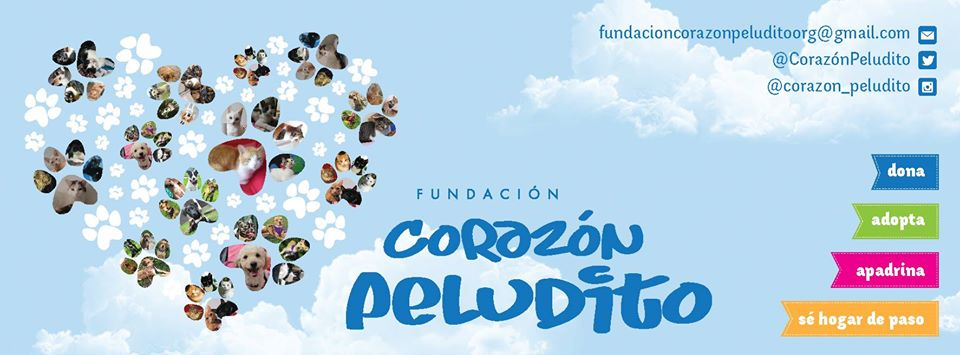
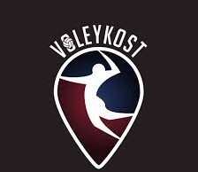

Diego Riveros
Software Development Engineer with a minor in Psychology, passionate about programming, software development processes, software testing, best practices, software design as well as team dynamics, team building, and teamwork.
Research Project
Investigate the cons and pros of using shapes and images instead of numbers for software development effort estimation. The project is conducted under the advice of professors Mario Linares and Dario Correal for the department of system and computer engineering, and Luis Cardenas for the department of psychology

Mario Linares
Dario Correal
Luis Cardenas
Hobbies
Volunteering
Since 2017 I've been taking part in this amazing project. I've participated in several events that had allowed me to meet heartfelt stories of animals that had been rescued and delivered to joyful families, like Atenea, a doggy I met a year ago who is now with me at home. The foundation organizes adoption events each Saturday in pet shops, veterinaries or shopping malls in Bogotá. My duty there is to take care of dogs through the event, giving them a different day as they would have in their shelter.
Volleyball
Since childhood, I got interested in Volleyball, given that my height is an advantage for the game. In 2015 I had the opportunity to participate in the Voleykost club. I've participated in multiple tournaments in Bogotá by playing in the third position (center), which allowed me to spike and block with a high level, but because of the training, I have low skills at receiving.